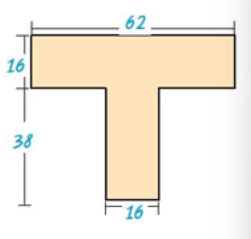

Πηγή: Σχολικό βιβλίο
Σε όλο το μήκος του εθνικού δρόμου Αθήνας - Αλεξανδρούπολης υπάρχουν χιλιομετρικές ενδείξεις. Οι ενδείξεις αυτές γράφουν: στη Λαμία 214, στη Λάρισα 362, στην Κατερίνη 445, στη Θεσσαλονίκη 514, στην Καβάλα 677, στην Ξάνθη 732, στην Κομοτηνή 788 και στην Αλεξανδρούπολη 854. Μπορείς να βρεις τις μεταξύ των πόλεων αποστάσεις;
Απάντηση: 121, 83, 69, 163, 55, 56, 66
Ο Σπύρος υπολόγισε με το μυαλό του το εμβαδόν του παρακάτω σχήματος και το βρήκε 1600 τετραγωνικά χιλιοστά. Υπολόγισε και συ το εμβαδόν και δώσε μια εξήγηση για το τι ακριβώς έκανες για να το βρεις.

Ο Νίκος κατέβηκε για ψώνια με 160 €. Σε ένα μαγαζί βρήκε ένα πουκάμισο που κόστιζε 35 €, ένα πανταλόνι που κόστιζε 48 € και ένα σακάκι που κόστιζε 77 €. Του φτάνουν τα χρήματα νια να τα αγοράσει όλα;
Απάντηση: ναι!
Σε ένα αρτοποιείο έφτιαξαν μία μέρα 120 κιλά άσπρο ψωμί, 135 κιλά χωριάτικο, 25 κιλά σικάλεως και 38 κιλά πολύσπορο. Πουλήθηκαν 107 κιλά άσπρο ψωμί, 112 κιλά χωριάτικο, 19 κιλά σικάλεως και 23 κιλά πολύσπορο. Πόσα κιλά ψωμί έμειναν απούλητα;
Απάντηση: 57
Ένα γκαράζ έχει 12 πατώματα. Τα 7 πατώματα έχουν 20 διπλές θέσεις το καθένα και τα υπόλοιπα από 12 διπλές θέσεις. Στο γκαράζ μπήκαν 80 μοτοσυκλέτες, 58 επιβατικά και 61 ημιφορτηγά. Επαρκούν οι θέσεις για όλα αυτά;
Απάντηση: ναι!
Ο Άρης γεννήθηκε το 1983 και είναι 25 χρόνια μικρότερος από τον πατέρα του. (α) Πόσων χρονών είναι ο Άρης σήμερα; (β) Πότε γεννήθηκε ο πατέρας του;
Απάντηση: το 2024 ήταν 41 και ο πατέρας 66.
Στη μονάδα μνήμης μιας φωτογραφικής μηχανής μπορούν να αποθηκευτούν 11 φωτογραφίες. (α) Πόσες τέτοιες ίδιες μνήμες χρειάζονται για να αποθηκευτούν 5 φωτογραφίσεις των 36 φωτογραφιών η καθεμιά; (β) Για πόσες φωτογραφίες θα μείνει χώρος στην τελευταία μονάδα;
Απάντηση: 16, 4
Να υπολογίσεις: (α) Πόσο κοστίζει το 1 μέτρο υφάσματος αν τα 5 μέτρα κοστίζουν 65 €; (β) Πόσο κοστίζει το 1 κιλό κρέας αν για τα 3 κιλά πληρώσαμε 30 €; (γ) Πόσα δοχεία των 52 λίτρων θα χρειαστούν για 46.592 λίτρα κρασιού;
Απάντηση: 13, 10, 896
Αν σήμερα είναι Τρίτη, τι μέρα θα είναι μετά από 247 ημέρες;
Απάντηση: Πέμπτη
Το τοπικό γραφείο της UNICEF θα μοιράσει 150 τετράδια, 90 στυλό και 60 γόμες σε πακέτα δώρων, ώστε τα πακέτα να είναι τα ίδια και να περιέχουν και τα τρία είδη. (α) Μπορεί να γίνουν 10 πακέτα δώρων; Αν ναι, πόσα από κάθε είδος θα έχει κάθε πακέτο; (β) Πόσα όμοια πακέτα δώρων μπορεί να γίνουν με όλα τα διαθέσιμα είδη; (γ) Πόσα το πολύ όμοια πακέτα δώρων μπορεί να γίνουν με όλα τα διαθέσιμα είδη;
Απάντηση: {ναι, 15, 9, 6}, {1, 2, 3, 4, 5, 6, 10, 12, 15, 20, 30}, 30.
Δύο πλοία επισκέπτονται ένα νησάκι. Το πρώτο ανά 3 ημέρες, το δεύτερο ανά 4 ήμερες. Αν ξεκίνησαν από το νησάκι ταυτόχρονα, σε πόσες ημέρες θα ξαναβρεθούν στο λιμάνι του νησιού;
Απάντηση: 12
Η εταιρεία Α βγάζει νέο μοντέλο αυτοκινήτου κάθε 2 χρόνια ενώ η εταιρεία Β κάθε 3 χρόνια και η εταιρεία Γ κάθε 5 χρόνια. Αν το 2001 έβγαλαν και οι τρεις εταιρείες νέα μοντέλα, πότε θα ξαναβγάλουν και οι τρεις μαζί νέο μοντέλο;
Απάντηση: 30
Ένας γυμναστής παρατήρησε ότι όταν τοποθετεί τους μαθητές της α' γυμνασίου ανά 3, ανά 5 και ανά 7 δεν περισσεύει κανένας. Πόσοι ήταν οι μαθητές της α' γυμνασίου στο σχολείο αυτό, αν γνωρίζουμε ότι το πλήθος τους είναι μεταξύ 100 και 200;
Απάντηση: 105
Ο Γιάννης πηγαίνει στον κινηματογράφο κάθε 10 ημέρες και ο Νίκος κάθε 12 ημέρες. Αν συναντήθηκαν στις 10 Μαρτίου στον κινηματογράφο, πότε θα ξανασυναντηθούν; Στο διάστημα μεταξύ των δύο συναντήσεών τους πόσες φορές έχει πάει ο καθένας τους χωριστά στον κινηματογράφο;
Απάντηση: 10 Μαΐου, 5, 4